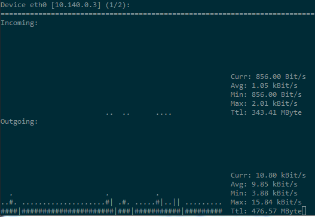

[nload] nloadでネットワークモニタリング¶
nload は、 CLI (Command Line Interface)でネットワークトラフィックをモニタリングするツールです。 リアルタイムにネットワークトラフィックを取得することができます。 デフォルトでは 500ミリ秒 間隔でデータを取得します。
nloadの起動¶
nload
nload [devices]
nload [options] [devices]
引数に何も指定しない場合は、全てのネットワークデバイスをモニタリングします。
デバイスの切り替えは、以下のキーでできます。
- 次のデバイスに切り替える：右カーソル、下カーソル、PageDown、Enter、Tab
- 前のデバイスに切り替える：左カーソル、上カーソル、PageUp
グラフのスケールを変更する (-i, -o)¶
ネットワークトラフィックが少なく、グラフが表示されない場合はオプション( -i, -o )でスケールを変更することができます。
例）インバウンドのスケール(-i)を64kbps、アウトバウンドのスケール(-o)を64kbpsに変更する。:
nload -i 64 -o 64
データの取得間隔を変更する (-t)¶
データの取得間隔を変更するには、 -t オプションを利用します。
デフォルトは 500ミリ秒 です。
例）取得間隔を1秒 (1000ミリ秒)に変更する:
nload -t 1000
nloadを終了する (q)¶
q キーを押すとnloadを終了できます。